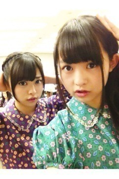

| 2012/11 26 Mon | 301回目*marika |
絶賛テスト勉強中。
ん？前回の記事の話？
あ、食べ物のところ...生姜...生姜...
あーこれはーきっと、あれだよ。
間違えて2個書いたわけじゃないよ。
あの、あれだよ。
*****
こんばんまりっか！

今日はインフルエンザの
予防接種の日でした。
注射って地味に痛いのよね。
目つぶって「う"いぃぃ...」と
地味に声がもれたのよね。
今日嬉しかったことはね...
久しぶりにメンバーに会えたこと

今日はハイテンションデレまくりで
自分気持ち悪かったわ
 ←
←
←
ゆったん、生駒ちゃんに会ってー
そんでせっちゃんかなりんまひろねね
とご飯食べたのー♪
るんるんるんるんるんるんるんるんる
勉強で家にこもってたけど、
メンバーに会って
パワーチャージされましたー
嬉しくて嬉しくて嬉しくて
顔がにやけたんだからっ
そんで夕食はだいすきな鍋というね！
コラーゲン鍋
 ぴちぴちお肌
ぴちぴちお肌
ぴちぴちお肌
今日は素晴らしい一日だったよ。
*****
昨日の乃木どこは
ゆみ姉の卒業式でした。
ゆみ姉、卒業おめでとう！
*****
たくさんのコメント
ありがとうございました！
みなさん...気付いてましたか？
前回の記事のデコメ、写真3つずつ。
300回だけに
ちなみに写真は300回目のために
パパに撮ってもらいました
おやすみなさい
まりか
コメント(206)
2012/11/26 22:18